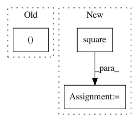

55d342a0d0e44f3420877a8e9452adba7933ae72,gpflow/kernels/stationaries.py,Stationary,scaled_square_dist,#Stationary#Any#Any#,38
Before Change
if X2 is None:
dist = -2 * tf.linalg.matmul(X, X, transpose_b=True)
dist += tf.reshape(Xs, (-1, 1)) + tf.reshape(Xs, (1, -1))
return dist
X2 = X2 / self.lengthscale
After Change
dist += Xs + tf.linalg.transpose(Xs)
return dist
Xs = tf.reduce_sum(tf.square(X), axis=-1)
X2 = X2 / self.lengthscale
X2s = tf.reduce_sum(tf.square(X2), axis=-1)
dist = -2 * tf.tensordot(X, X2, [[-1], [-1]])
dist += broadcasting_elementwise(tf.add, Xs, X2s)
In pattern: SUPERPATTERN
Frequency: 3
Non-data size: 3
Instances
Project Name: GPflow/GPflow
Commit Name: 55d342a0d0e44f3420877a8e9452adba7933ae72
Time: 2019-04-11
Author: art.art.v@gmail.com
File Name: gpflow/kernels/stationaries.py
Class Name: Stationary
Method Name: scaled_square_dist
Project Name: tensorlayer/tensorlayer
Commit Name: 641a28fbf0daff0ad1ad0f43d2c4b545cb6f9656
Time: 2019-02-16
Author: dhsig552@163.com
File Name: examples/reinforcement_learning/tutorial_cartpole_ac.py
Class Name: Critic
Method Name: learn
Project Name: GPflow/GPflow
Commit Name: 956ac38fd58a1ef65c18dffc06a22d2e628e3a16
Time: 2016-01-18
Author: james.hensman@gmail.com
File Name: testing/test_conditionals.py
Class Name: WhitenTestGaussian
Method Name: test_whiten